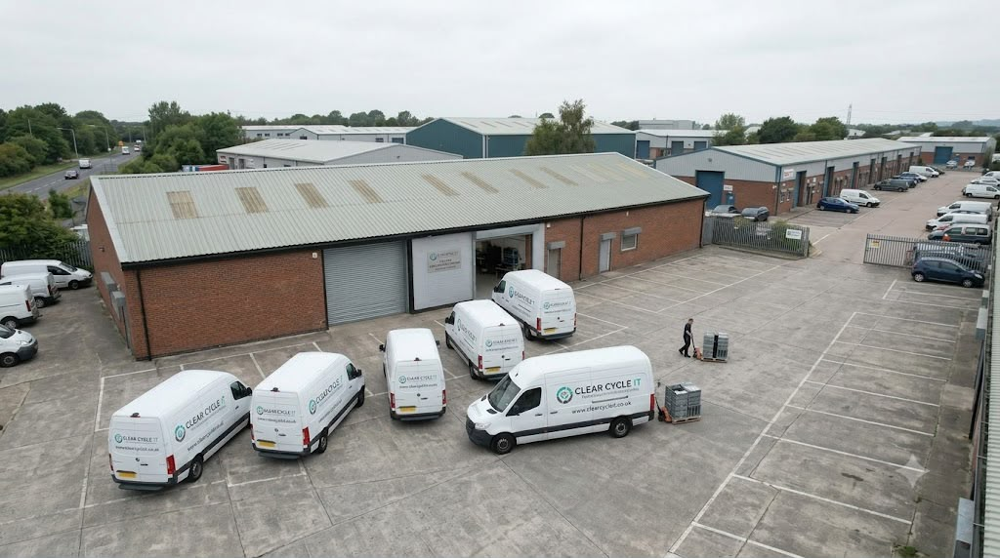

We provide professional, certified IT Asset Disposal (ITAD) for corporations, data centres, and public sector organisations. Maintain data compliance and meet your green targets.
Every business replaces IT equipment sooner or later. Laptops, servers and network devices all reach the end of their working life. IT asset disposal, often called ITAD, is the safe removal of this equipment, including the data stored on it. Clear Cycle IT is an IT asset disposal company UK businesses can rely on. Our service helps you free up space, protect your data and reduce electronic waste. Your staff can carry on with their work while our team manages the removal from start to finish.

We provide IT asset disposal services that include collection, safe data handling, reuse, and recycling. Each job is specific to your equipment and site.
Customer, staff and company information is often stored on old computers, laptops, phones and servers. Deleting files does not always remove this information.
Our service gives you a secure way to remove equipment from your site. Devices that store data are wiped or destroyed, depending on their type and condition. You receive documents that record what we collected.
We arrange collections at times that suit your business, so there is little disruption to your day.

We will securely destroy all personal data if you determine your device cannot be wiped safely, or when your equipment is too old or damaged to be reused. Once the data has been destroyed, we’ll provide you with a certificate of destruction.
Equipment that still works may be suitable for reuse once it has passed our checks and been wiped. We aim to reuse the equipment wherever possible – otherwise recycle it responsibly, reducing electronic waste while recovering valuable materials.
We collect:
If you are not sure whether we can take an item, send us a list and we will confirm.
Our services cover large scale equipment clearance for businesses with lots of kit spread over multiple locations – whether this be different office premises, meeting rooms, storage facilities or even server rooms.
For smaller-scale disposals, including planned upgrades, we can manage all aspects of removing equipment from your premises efficiently and without disruption to operations.
Old equipment takes up space your business could use. We discuss what needs to be removed and plan the collection to keep disruption to your staff low.
System upgrades create a lot of work for your IT team. We collect and process the old equipment, and we can arrange secure data destruction on request. You receive detailed records of the items removed.
For businesses with several sites, our corporate IT disposal services UK wide can be planned as one project. Please contact us to discuss your volumes and timings.
When you compare IT disposal companies UK wide, look at data safety, paperwork and how the collection is run. These are the points that matter most.
We use secure processes to protect data stored on suitable devices. We can wipe or destroy data, depending on the equipment and its condition.
You can book a collection without asking your staff to manage every step. We plan the work around your equipment and your site.
When needed, we provide asset reports, waste transfer notes and certificates of destruction. These give you a clear record of what happened to your equipment.
We keep useful equipment in use wherever possible. Items that cannot be reused are sent for responsible recycling.
Our IT disposal UK service reaches eligible organisations across mainland UK. Collection arrangements depend on your location, your equipment and the minimum collection requirement.
Our process is simple and easy to follow.

Related reading: secure data destruction, hard drive destruction, WEEE recycling and IT disposal for schools.
Don’t let old IT equipment take over valuable space. Clear Cycle IT can help you arrange a collection, protect stored information and manage unwanted equipment responsibly.
Our team is available now to talk through your equipment, your needs, how much clearance you require and get you on the path towards making the next move.
Contact Clear Cycle IT to discuss your collection and request a booking.
While 'normal' recycling doesn’t protect your data, IT asset disposal does – along with ensuring that equipment gets appropriately re-used if possible, and recycled responsibly otherwise (and keeping a record of all of these things).
After assessing it, we’ll either securely wipe/destroy anything that had personal data on them, or use it ourselves if it’s still working (after passing our assessments) or recycle it responsibly if it can’t be used anymore.
We’d recommend taking the hard drives out first because we know it can sometimes be tricky knowing which ones contain your data, especially when you’re trying to decide whether they were actually important enough to keep. However, if you aren’t sure, just tell us in your initial email whether your drives are still within their devices.
Yes, just let us know which sites you’d like collected from, the equipment there, and when you want them. We’ll then tailor our planning around that.
IT disposal collection is completely free for eligible businesses, defined as having at least ten major pieces of IT equipment (such as laptops, desktops computers, servers or monitors). Smaller accessories don’t count toward this minimum number. Let us know if you’re unsure about how many you have – we can tell you whether or not there’s any cost involved.
Retiring old IT equipment involves substantial security and environmental risks. We help your business mitigate these exposures cleanly.
IT asset disposal (ITAD) is the secure, audited process of decommissioning, sanitising, and recycling redundant corporate computer hardware. By dismantling obsolete systems and permanently wiping storage media, organisations can protect sensitive company intelligence while fulfilling their environmental obligations.
Clearcycle IT provides a secure, UK-wide collection and recycling workflow that eliminates data security risks and corporate liability. Our certified lifecycle management handles transportation, data wiping, and material recovery, documenting every step to ensure complete transparency. This ensures you can pass regulatory checks and internal security audits without issues.

Obsolete devices containing proprietary data must be handled responsibly. We overwrite or physically shred drives to protect your business. We ensure data is rendered permanently unrecoverable in line with ICO requirements, safeguarding sensitive data such as employee payroll files and client records.
Discarded commercial electronics fall under UK WEEE laws. We provide licensed transport and all required waste transfer notes. Every business must retain Waste Transfer Notes and Hazardous Waste Consignment Notes for 2 years to prove complete environmental compliance during audits.
We enforce a strict 0% landfill policy. Electronics are refurbished or split into raw materials for manufacturing reuse. Reclaiming materials like copper wire, aluminium, and plastics supports circular economy goals and lowers your organisation's Scope 3 carbon footprint.
We manage the collection and disposal process from start to finish, ensuring peace of mind for your IT department.

Our secure chain of custody is designed to maintain absolute transparency from the moment hardware leaves your premises. We use GPS-tracked vehicles and background-checked technicians to maintain security.
Upon collection, all items are protected inside tamper-evident containers to maintain an unbroken audit log during transit back to our secure sorting facility.
Tracked vehicles and background-checked staff pick up your retired computer equipment directly from your storage locations. We handle all logistics internally without subcontractors, ensuring complete control over your assets.
Every hardware item is catalogued by its manufacturer, model, and serial number, establishing a clear custody record. This ensures full traceability for all assets, including laptops, servers, and desktops.
Drives are wiped using professional, certified software to HMG Infosec standards. Failing media is physically shredded. We ensure block-level verification for all magnetic and solid-state drives.
Hardware is refurbished or reclaimed. We issue your formal Certificate of Destruction and WEEE transfer documents, providing the legal evidence required for internal and external compliance audits.
ITAD services in the United Kingdom are governed by BS EN 15713:2023, ISO 27001, and NIST SP 800-88 standards. These frameworks define secure media sanitisation and physical shredding protocols.
We adhere strictly to these frameworks to ensure the highest levels of security and environmental compliance. ISO 27001 governs our information security management system, while NIST SP 800-88 Rev 1 provides international guidelines for media sanitisation. Our software overwrites sectors to purge storage units completely.
Physical destruction is aligned with BS EN 15713. This standard regulates the secure destruction of data carriers, including solid-state drives, magnetic tapes, and optical discs. We shred drives to a 2mm particle size to prevent any recovery.
| Decommissioning Stage | Core Security Process | Regulatory Standard Met | Documentation Issued |
|---|---|---|---|
| 1. Collection & Transit | GPS-tracked vehicles & DBS-checked crews | Duty of Care Regulations 2013 | Waste Transfer Note (WTN) |
| 2. Receiving & Auditing | Serialisation log & manufacturer tracking | ISO 9001 Quality Standards | Serialised Audit Report |
| 3. Sanitisation & Destruction | Software erase & physical shredding | NIST 800-88 & BS EN 15713 | Certificate of Data Destruction |
| 4. Reclamation & Reuse | Refurbishment or raw material breakdown | WEEE Directive (0% Landfill) | Materials Recovery Statement |
Yes. Businesses are legally liable for data breaches and environmental dumping. Regulatory bodies can issue substantial fines for GDPR violations and WEEE non-compliance. You must maintain audit logs for protection.
Computers that are broken or too old are dismantled. The components are sorted by material type. Examples of separated materials include plastics, steel, and copper. These are sent to recycling plants for raw material processing.
No. Simple file deletion or formatting does not erase data permanently. Specialised forensic recovery software can restore deleted files easily. You must use certified software overwriting or physical drive shredding for secure sanitisation.
A serialised audit report is your primary proof of compliance. It links each decommissioned device to its final destruction record. This documentation is required to pass data protection audits and ISO standard reviews.
We calculate carbon footprint offsets by comparing the reuse of refurbished hardware with the manufacturing footprint of new components. We supply this data in your environmental reports to assist with corporate green reporting goals.
We require a minimum of 10 major IT items (PCs, laptops, servers, or monitors) to schedule a collection. Accessories are collected alongside major units free of charge.